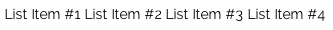
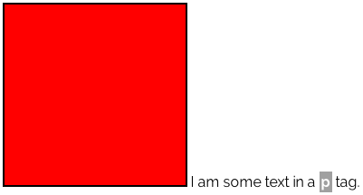

Match the Layout with Custom CSS
In the following examples, you will be given a screenshot of a layout / arrangement of various HTML elements. You will then see a section containing these HTML elements, and it will be up to you to add the custom CSS styles to match the layout in the screenshot.
To complete these exercises, you will need to be modifying a stylesheet within this assignment's directory. There is already a blank CSS stylesheet in this directory which is where you will be adding your styles. Look for the stylesheet titled students.css and add your custom CSS rules there. Don't forget to save this file each time you make changes! Afterward, refresh the page to see if your CSS successfully matched the layout at hand.
IMPORTANT NOTE: for each example, there is a "wrapper" div that wraps the HTML elements you will be styling. You will need to target each example's wrapper div and THEN its HTML elements in your custom CSS style rules. Each wrapper div has an ID corresponding to the example number, in the following format: example-1
Thus, the ID will first contain the word "example" followed by a dash followed by the respective example number. Thus, for Example #1, you will need to preface all custom CSS rules you create with the following:
#example-1 [rest of your selectors here] {
[your custom styles here]
}
Example #1
The following image shows 3 blue blocks spanning across one line. Each block is a div element with a width of 200px, height of 200px, and a solid black 2px border.
In the following section, there are 3 div elements in the markup (check the source/markup of this index.html file in SublimeText). Each div has a class of blue_block
In the students.css stylesheet, you need to target these div elements. Remember that you first need to target the wrapper div which has an ID of example-1 in this case. Then you will need to target the div elements with class of blue_block
There are two CSS styles you need to apply to these div elements. The background-color and then something else (hint: what's the title of this document?). To get you started, I'll show you the proper way to target these elements and will give you the background-color style. See below:
#example-1 .blue_block {
background-color: blue;
}
With that being said, go ahead and add this style as well as the other important style that you need to turhn these blocks blue and put them all on the same line.
Stuck? Check out the solution in the answers.css stylesheet (you can copy and paste the styles from there into the students.css stylesheet)
Example #2
Do you remember how a block-level element with display:inline-block; set on it now longer takes up the full width of its container but instead takes up the width of only its content? This is one way in which display:inline-block; makes block-level elements behave like inline elements.
Consider the following example below. Each sentence is in fact its own separate p element in the following screenshot:
The following markup is identical to that of the screenshot above. Go ahead and add a display:inline-block; CSS rule to the p elements inside of the example-2 wrapper. You will see how the second sentence moves up to set inline with the first, since the first p element now only takes up the width of its content (the text) as opposed to the full width of its container.
I am the first sentence inside of a p tag.
I am the second sentence inside of a different, separate p tag.
Stuck? Check out the solution in the answers.css stylesheet (you can copy and paste the styles from there into the students.css stylesheet)
Example #3
Recall that li elements are block-level elements. Therefore, when you create an unorderd ul list or an ordered ol list, each li list item will be on a new line by default (the li items take up the width of their container, which is the ul or ol in this case)
If we want to put the items on the same line, we can use the display:inline-block style on the li items.
In the following example, you can see an unordered list's list items all on the same line:

In the following markup, target the li items within the example-3 wrapper div and change the display property to make each list item appear on the same line.
- List Item #1
- List Item #2
- List Item #3
- List Item #4
Stuck? Check out the solution in the answers.css stylesheet (you can copy and paste the styles from there into the students.css stylesheet)
Example #4
In the following example, you will see a colored red block with some text in a p element sitting to the right of it:

Obviously, display:inline-block; is at work here. But do you think this property is on the div element (the block)? Or do you think it's on the p element (the text)? OR do you think it's on both? Take a moment to ponder this, and then style up the following markup to match the image.
I am some text in a p tag.
Stuck? Check out the solution in the answers.css stylesheet (you can copy and paste the styles from there into the students.css stylesheet)
Example #5
Another use for display:inline-block is to give inline elements certain properties that only block-level elements have or respond to. For example, inline elements will not respond to top and bottom margins. We can move inline elements left and right with left/right margins, as this still keeps them on the same line. However, we can NOT move them up and down with margin-top or margin-bottom properties... by default.
So how can we move that span of text down 10px? Well, we could give it a display:inline-block property, and then we can use a margin-top property to move it, as it will now behave somewhat like a block-level element.
This is a paragraph with a red span of text inside of it. Move the span element down by 20px in your CSS. (Yes, it will also bump this paragraph down too. Don't concern yourself with this.)
Stuck? Check out the solution in the answers.css stylesheet (you can copy and paste the styles from there into the students.css stylesheet)
Note: this is an easy one to forget. Just remember that we can NOT move inline elements up and down with top and bottom margin properties. We MUST change their display to either "block" (which kind of defeats the purpose of using an inline element in the first place) or to "inline-block" (which retains some inline aspects but gives us access to some block-level aspects).
Final Notes
When we give elements a display:inline-block property, we are effectively combining aspects of inline elements and block-level elements.
It is important to understand how inline elements behave with this property (for example, we get access to margin-top and margin-bottom styles), and it is also important to understand how block-level elements behave with this property (for example, they no longer take up all the width that they can but instead only the space of their content, just like inline elements).
Using display:inline-block on block-level elements is the preferred way of getting elements to sit on the same line (if there's enough space, of course). We can also use the float CSS property, but that's a whole can of worms in and of itself.
Another important thing to note is that by adding a display:inline-block property to block-level elements, most browsers insert about a 4px gap of space between each element. If you recall from class, this can vary from browser to browser, and it's actually due to the way the browser is interpreting white-space in the markup. Feel free to ask me in person more about this if you're interested. In any case, most developers will use a margin-left: -4px style on the affected elements to nudge them right up against each other. However, if you do this, you'll have to ensure that the FIRST element doesn't get this property, otherwise it will also be moved over 4px to the left, which isn't necessary since there's nothing before it.
In regards to the above, floating elements won't add any space between them, but the tradeoff is a whole different set of quirks that can often be much more annoying or troublesome to override. Please see my reference document uploaded to Web 101's Github pages here titled "All About Floats" to learn more about this.
In fact, let's take a look at using display:inline-block to put four red boxes (all div elements, as usual) on the same line, and then we will use a -4px left margin on the 2nd, 3rd, and 4th boxes to nudge them up against each other.
Example #6
Go ahead and check out the answers.css stylesheet to see the CSS rules I've applied to the red boxes above. Note that I also put these styles in the main custom.css stylesheet since I am not referencing the answers.css stylesheet in this document (it is only there for your reference).